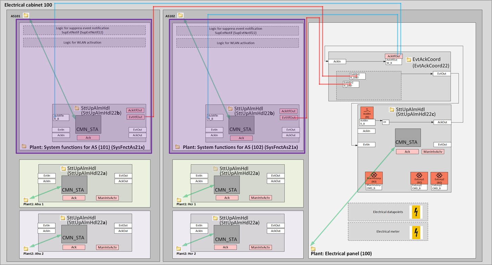
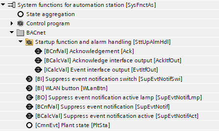

[SysFnctAs21x] System functions for automation station (all options)
Name: [SysFnctAs21x] System functions for automation station (all options)
Library hierarchy: Plants
Plant operating modes
- None
Plant diagram

Main functions | Main components |
|---|---|
| N/A |
Project tree | Diagram |
|---|---|
 | N/A |

Program blocks are stored in the library without I/Os. Use the auto-create and auto-connect functions to create I/Os and/or to connect them to the interface blocks, e.g., R_A, CMD_B. Alternatively, take the I/Os from the folder containing the predefined I/Os in the library and/or from the plant and connect them to the interface blocks.
Optional elements
Name | Description | Type | Alarm / Notification class | Trend / Type |
|---|---|---|---|---|
SttUpAlmHdl | Startup function and alarm handling | [SttUpAlmHdl22b] Startup and alarm handling, 3 priorities at device level | N/A | N/A |
SupEvtNotif | Suppress event notification | N/A | N/A | |
WLAN activation | ||||
WLanBtn | WLAN button | BI: Binary input | No | Yes, 4 |